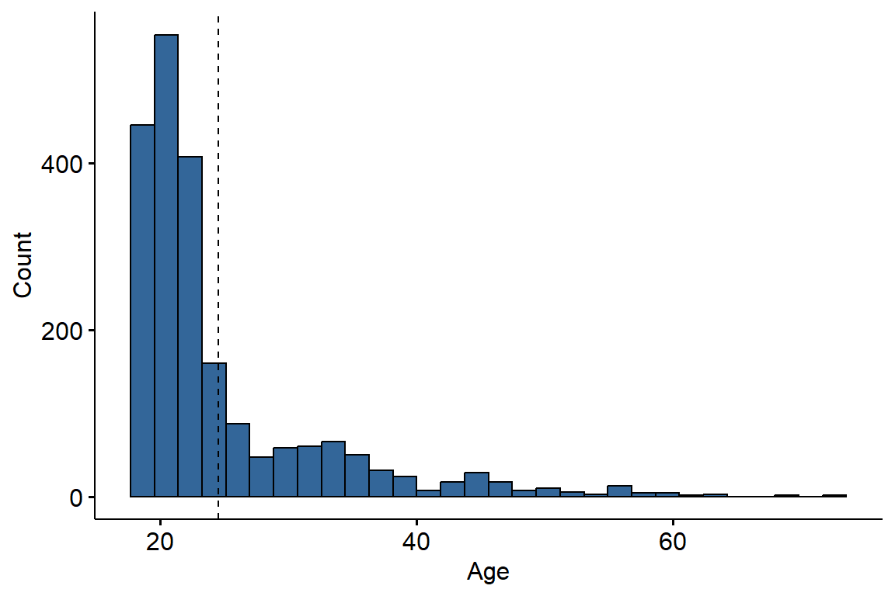
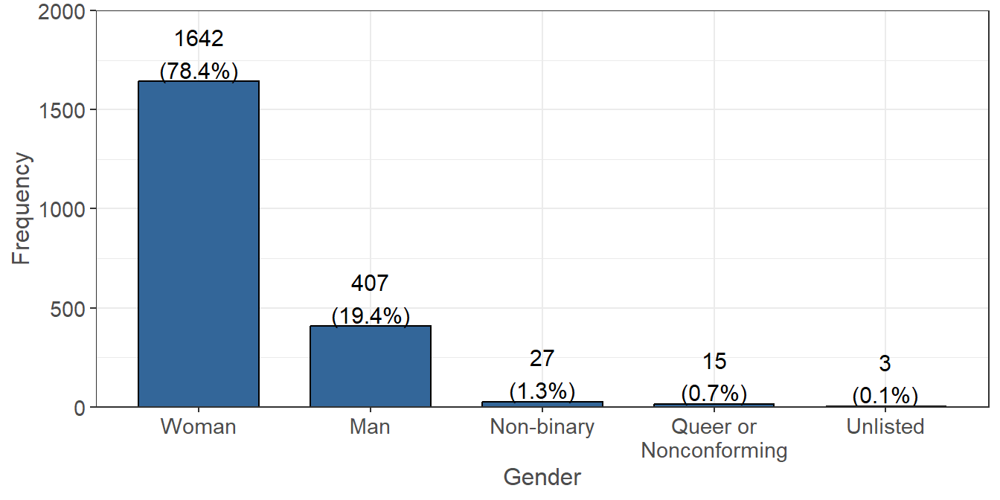
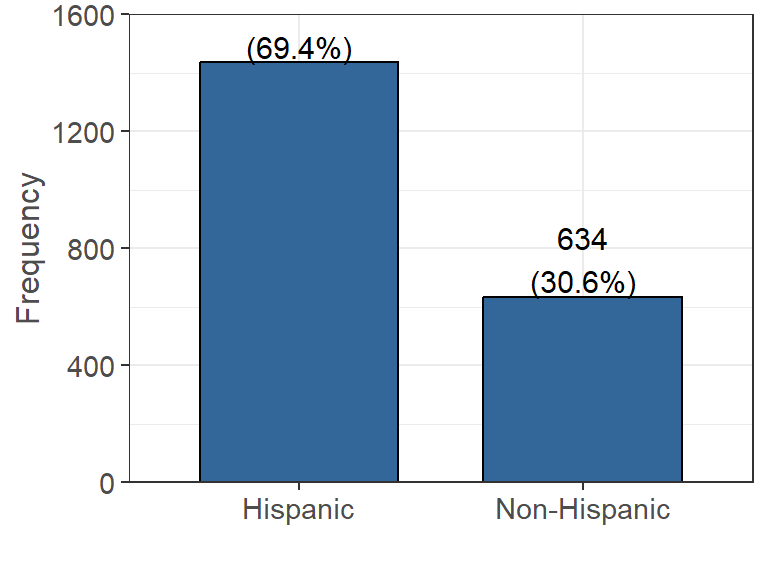
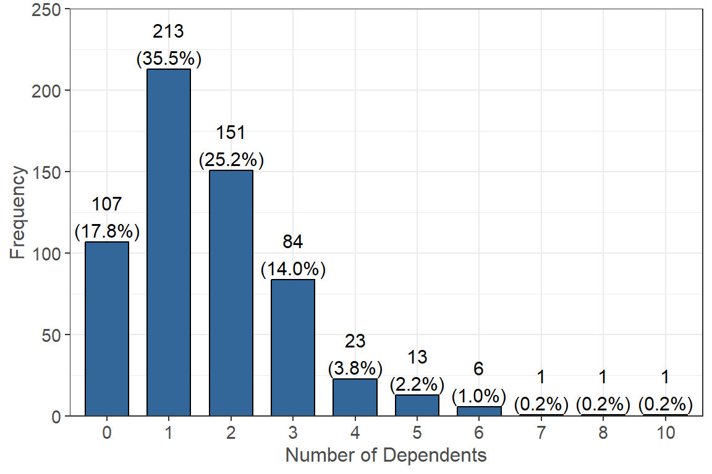
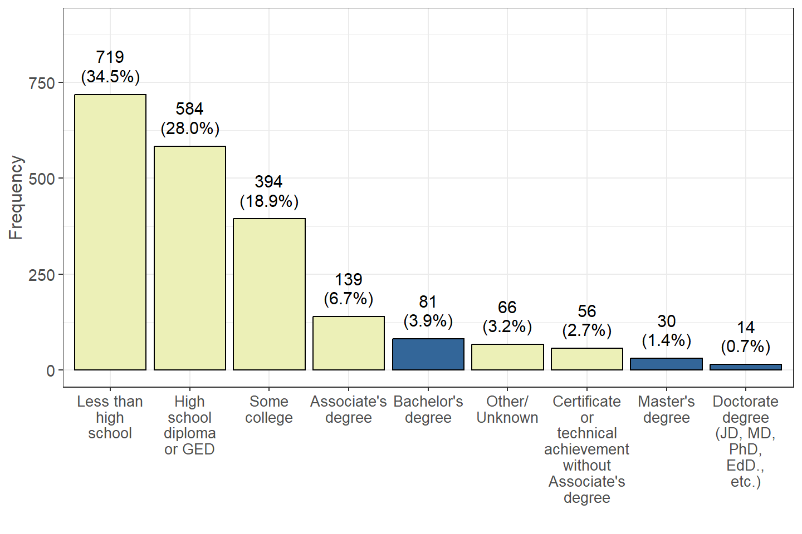
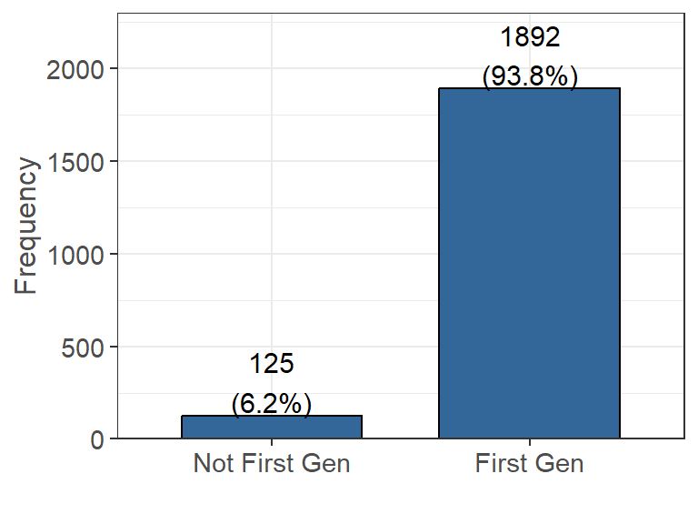

Demographics
Personal Demographics
The following set of questions were asked in regards to the students’ personal demographics. This includes the students’ age, ethnicities they identify with, and the number of dependents they are responsible for taking care of. They were also asked about parents’ education, which will help us identify first generation college students.
Age
The following was determined by taking the difference between birth date and the time at which the survey was completed (n=2110, 100% of 2110 reporting)
The age for participants in the survey range from 18 to 72 at the time of completion, with the majority of participants being between 20-30 years old. The average age of a participant in this survey is 24.6 years old.
Gender Identity
What is your gender identity? (n=2094, 99% of 2110 reporting)

Of the survey participants, 1642 of them identify as a woman, 407 identify as a man, and 27 identify as gender non-binary. There are also survey participants who preferred not to answer.
Ethnicity
In the US Census, Hispanic Origins are not races. Do you identify as Hispanic or Latino or Spanish Origin? (n=2070, 98% of 2110 reporting)

We define Hispanic Origin to include: Mexican, Mexican American, Chicano, Puerto Rican, or another Hispanic/Latino/Spanish origin. The data indicates that the majority of survey participants identify as having Hispanic Origins (1436 people), while around a quarter of them do not identify as having Hispanic Origins (634 people).
Race
What race do you identify as? Select all that apply (n=2110, 100% of 2110 reporting) Note that the survey included 14 race options that were collapsed down to 5 broad groups defined by census.gov.
| Yes (%) | |
|---|---|
| White | 859 (40.7%) |
| Prefer not to answer race | 755 (35.8%) |
| Asian | 321 (15.2%) |
| Black or African American | 167 (7.9%) |
| American Indian and Alaska Native | 106 (5.0%) |
| Native Hawaiian and Other Pacific Islander | 40 (1.9%) |
Dependents
If you have dependents, then how many of them receive more than 50% of their financial support from you? (n=600, 28% of 2110 reporting)

The majority of survey participants who report having at least one dependent also report that they provide more than 50% of financial support to at least one dependent (493 people).
Parents Education
What is the highest level of education completed by your parents/guardians? (n=2083, 99% of 2110 reporting)

Note: Variables filled with yellow above are used to show the conditions used to build the First Generation variable.
The highest level of education completed by most survey participants’ parents is “Less than high school” (719), while 584 survey participants reported their parents highest level is “High school diploma or GED”, and 394 report their parents highest level is “Some college”. Only a minority of survey participants (125) indicated that their parents have a bachelor’s degree or higher.
First Generation
Note: Students with parents education identified as “Other/Unknown” were not marked as first gen or not since they could not be determined. (n=2017, 96% of 2110 reporting)

1892 survey participants are considered as First Generation College students and 125 survey participants are not considered First Generation College students.
As defined by the University of California first generation students are “working to be part of the first generation in their families to earn a four-year university degree”. This means based upon parents education, students in the data set are considered first generation if their parents do not have a Bachelor’s or Master’s degree from a four-year university. From the Parents Education graph, all bars highlighted as yellow are considered first gen, while all bars in blue are not (excluding Other/Unknown).